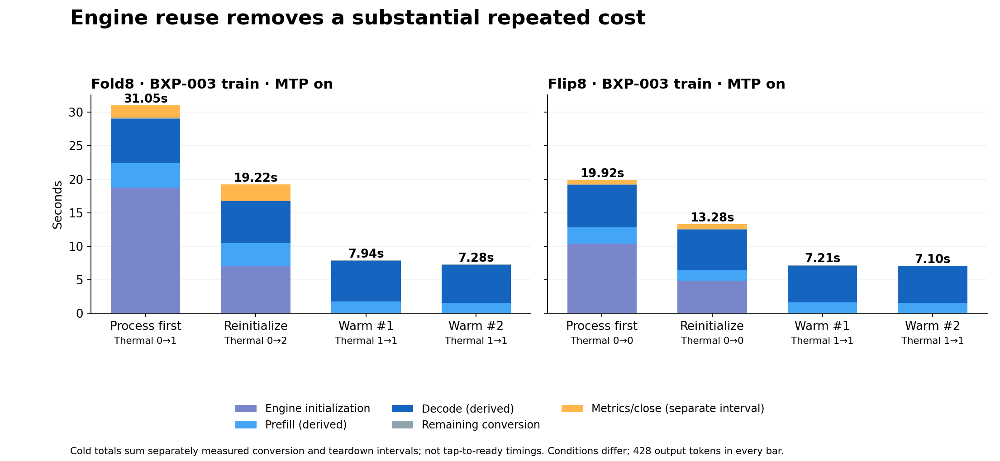
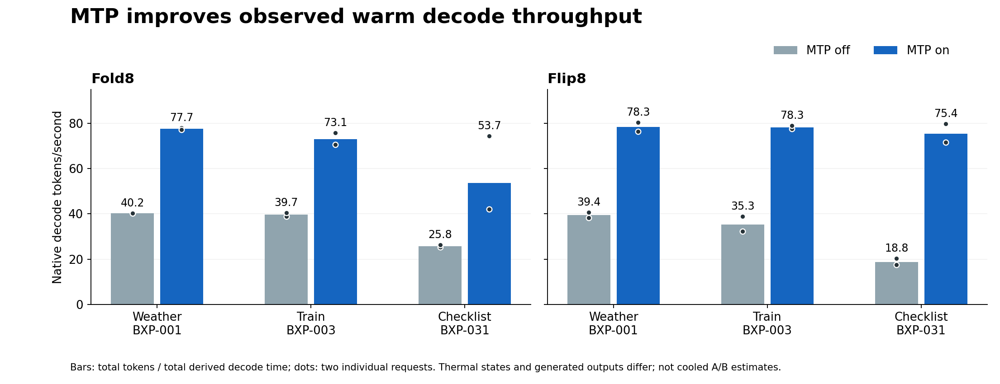

Where conversion time goes
Completed run planGenerated 2026-10-11T03:56:08+00:00. Measurements stay within each device and exact frozen case. Arms are marked complete only when device and host receipts agree.
Evidence charts
Derived phase estimates, separate teardown, and thermal/output confounds are labeled in the figures.


Stage profile
All-observed request medians in each arm, including thermally flagged cases. Strict-cooled counts appear in the table. Component durations are approximate; use them to locate large costs.
Arms and order
| Device | Order | Arm | State | Strict-cooled / observed | All-run median conversion | All-run native decode | Strict-cooled median conversion | Raw/final | Flags |
|---|---|---|---|---|---|---|---|---|---|
| SM-F971B | 1 | baseline_cold_mtp_on | complete | 0/2 | 23.01 s | 66.5 tok/s | — s | 2/2 | thermal 0; reuse 0 |
| SM-F971B | 2 | controls_warm_mtp_on | complete | 0/6 | 7.61 s | 60.9 tok/s | — s | 6/6 | thermal 6; reuse 0 |
| SM-F971B | 3 | controls_warm_mtp_off | complete | 0/6 | 12.29 s | 30.1 tok/s | — s | 6/6 | thermal 6; reuse 0 |
| SM-F971B | 4 | controls_stream_mtp_on | complete | 0/4 | 6.27 s | 73.4 tok/s | — s | 4/4 | thermal 4; reuse 0 |
| SM-F776U | 1 | baseline_cold_mtp_on | complete | 2/2 | 15.92 s | 69.1 tok/s | 15.92 s | 2/2 | thermal 0; reuse 0 |
| SM-F776U | 2 | controls_warm_mtp_off | complete | 1/6 | 13.70 s | 23.4 tok/s | 6.79 s | 6/6 | thermal 4; reuse 0 |
| SM-F776U | 3 | controls_warm_mtp_on | complete | 0/6 | 7.16 s | 76.6 tok/s | — s | 6/6 | thermal 6; reuse 0 |
| SM-F776U | 4 | controls_stream_mtp_on | complete | 0/4 | 6.20 s | 78.2 tok/s | — s | 4/4 | thermal 4; reuse 0 |
Every measured request
| Device | Arm | Case | Engine | Thermal | Init | Prefill* | Decode* | Residual* | SDK | Total | Preview | Tokens | Flags |
|---|---|---|---|---|---|---|---|---|---|---|---|---|---|
| SM-F971B | baseline_cold_mtp_on | BXP-003 #1 | cold | 0→1 | 18.78s | 3.63s | 6.60s | 0.12s | 0.07s | 29.20s | 24.20s | 428 | thermal-end-nonzero |
| SM-F971B | baseline_cold_mtp_on | BXP-003 #2 | cold | 0→2 | 7.09s | 3.38s | 6.27s | 0.03s | 0.07s | 16.82s | 11.92s | 428 | thermal-end-nonzero |
| SM-F971B | controls_warm_mtp_on | BXP-001 #1 | warm | 1→1 | 0.00s | 1.39s | 2.74s | 0.02s | 0.06s | 4.20s | —s | 214 | cooldown-timeout, thermal-gate-unverified, thermal-start-nonzero, thermal-end-nonzero |
| SM-F971B | controls_warm_mtp_on | BXP-003 #1 | warm | 1→1 | 0.00s | 1.77s | 6.06s | 0.02s | 0.08s | 7.94s | —s | 428 | cooldown-timeout, thermal-gate-unverified, thermal-start-nonzero, thermal-end-nonzero |
| SM-F971B | controls_warm_mtp_on | BXP-031 #1 | warm | 1→2 | 0.00s | 2.10s | 11.92s | 0.03s | 0.16s | 14.21s | —s | 886 | cooldown-timeout, thermal-gate-unverified, thermal-start-nonzero, thermal-end-nonzero |
| SM-F971B | controls_warm_mtp_on | BXP-001 #2 | warm | 2→2 | 0.00s | 1.43s | 2.77s | 0.02s | 0.04s | 4.25s | —s | 214 | cooldown-timeout, thermal-gate-unverified, thermal-start-nonzero, thermal-end-nonzero |
| SM-F971B | controls_warm_mtp_on | BXP-003 #2 | warm | 1→1 | 0.00s | 1.56s | 5.65s | 0.02s | 0.05s | 7.28s | —s | 428 | cooldown-timeout, thermal-gate-unverified, thermal-start-nonzero, thermal-end-nonzero |
| SM-F971B | controls_warm_mtp_on | BXP-031 #2 | warm | 2→4 | 0.00s | 4.31s | 21.05s | 0.12s | 0.20s | 25.67s | —s | 886 | cooldown-timeout, thermal-gate-unverified, thermal-start-nonzero, thermal-end-nonzero |
| SM-F971B | controls_warm_mtp_off | BXP-001 #1 | warm | 2→2 | 0.00s | 1.39s | 5.32s | 0.02s | 0.04s | 6.78s | —s | 214 | cooldown-timeout, thermal-gate-unverified, thermal-start-nonzero, thermal-end-nonzero |
| SM-F971B | controls_warm_mtp_off | BXP-003 #1 | warm | 2→3 | 0.00s | 1.91s | 10.64s | 0.02s | 0.09s | 12.66s | —s | 414 | cooldown-timeout, thermal-gate-unverified, thermal-start-nonzero, thermal-end-nonzero |
| SM-F971B | controls_warm_mtp_off | BXP-031 #1 | warm | 2→4 | 0.00s | 2.29s | 36.60s | 0.04s | 0.21s | 39.14s | —s | 926 | cooldown-timeout, thermal-gate-unverified, thermal-start-nonzero, thermal-end-nonzero |
| SM-F971B | controls_warm_mtp_off | BXP-001 #2 | warm | 2→2 | 0.00s | 1.50s | 5.32s | 0.03s | 0.05s | 6.90s | —s | 214 | cooldown-timeout, thermal-gate-unverified, thermal-start-nonzero, thermal-end-nonzero |
| SM-F971B | controls_warm_mtp_off | BXP-003 #2 | warm | 2→2 | 0.00s | 1.60s | 10.21s | 0.04s | 0.07s | 11.92s | —s | 414 | cooldown-timeout, thermal-gate-unverified, thermal-start-nonzero, thermal-end-nonzero |
| SM-F971B | controls_warm_mtp_off | BXP-031 #2 | warm | 2→4 | 0.00s | 1.82s | 35.15s | 0.04s | 0.17s | 37.19s | —s | 926 | cooldown-timeout, thermal-gate-unverified, thermal-start-nonzero, thermal-end-nonzero |
| SM-F971B | controls_stream_mtp_on | BXP-001 #1 | warm | 3→3 | 0.00s | 1.56s | 3.14s | 0.13s | 0.08s | 4.91s | 2.97s | 214 | cooldown-timeout, thermal-gate-unverified, thermal-start-nonzero, thermal-end-nonzero |
| SM-F971B | controls_stream_mtp_on | BXP-003 #1 | warm | 2→2 | 0.00s | 1.83s | 5.92s | 0.04s | 0.09s | 7.88s | 3.02s | 428 | cooldown-timeout, thermal-gate-unverified, thermal-start-nonzero, thermal-end-nonzero |
| SM-F971B | controls_stream_mtp_on | BXP-001 #2 | warm | 2→2 | 0.00s | 1.44s | 2.72s | 0.03s | 0.05s | 4.23s | 2.53s | 214 | cooldown-timeout, thermal-gate-unverified, thermal-start-nonzero, thermal-end-nonzero |
| SM-F971B | controls_stream_mtp_on | BXP-003 #2 | warm | 2→2 | 0.00s | 1.72s | 5.73s | 0.13s | 0.06s | 7.63s | 3.03s | 428 | cooldown-timeout, thermal-gate-unverified, thermal-start-nonzero, thermal-end-nonzero |
| SM-F776U | baseline_cold_mtp_on | BXP-003 #1 | cold | 0→0 | 10.42s | 2.38s | 6.36s | 0.05s | 0.06s | 19.27s | 14.25s | 428 | clear |
| SM-F776U | baseline_cold_mtp_on | BXP-003 #2 | cold | 0→0 | 4.82s | 1.66s | 6.02s | 0.01s | 0.05s | 12.57s | 8.03s | 428 | clear |
| SM-F776U | controls_warm_mtp_off | BXP-001 #1 | warm | 0→0 | 0.00s | 1.44s | 5.27s | 0.02s | 0.05s | 6.79s | —s | 214 | clear |
| SM-F776U | controls_warm_mtp_off | BXP-003 #1 | warm | 0→1 | 0.00s | 2.12s | 12.82s | 0.02s | 0.06s | 15.03s | —s | 414 | thermal-end-nonzero |
| SM-F776U | controls_warm_mtp_off | BXP-031 #1 | warm | 1→1 | 0.00s | 1.83s | 52.76s | 0.03s | 0.19s | 54.81s | —s | 926 | cooldown-timeout, thermal-gate-unverified, thermal-start-nonzero, thermal-end-nonzero |
| SM-F776U | controls_warm_mtp_off | BXP-001 #2 | warm | 1→1 | 0.00s | 1.57s | 5.59s | 0.03s | 0.05s | 7.24s | —s | 214 | cooldown-timeout, thermal-gate-unverified, thermal-start-nonzero, thermal-end-nonzero |
| SM-F776U | controls_warm_mtp_off | BXP-003 #2 | warm | 1→1 | 0.00s | 1.62s | 10.65s | 0.03s | 0.06s | 12.37s | —s | 414 | cooldown-timeout, thermal-gate-unverified, thermal-start-nonzero, thermal-end-nonzero |
| SM-F776U | controls_warm_mtp_off | BXP-031 #2 | warm | 1→2 | 0.00s | 1.82s | 45.63s | 0.03s | 0.12s | 47.60s | —s | 926 | cooldown-timeout, thermal-gate-unverified, thermal-start-nonzero, thermal-end-nonzero |
| SM-F776U | controls_warm_mtp_on | BXP-001 #1 | warm | 2→2 | 0.00s | 1.44s | 2.80s | 0.02s | 0.04s | 4.30s | —s | 214 | cooldown-timeout, thermal-gate-unverified, thermal-start-nonzero, thermal-end-nonzero |
| SM-F776U | controls_warm_mtp_on | BXP-003 #1 | warm | 1→1 | 0.00s | 1.60s | 5.51s | 0.03s | 0.06s | 7.21s | —s | 428 | cooldown-timeout, thermal-gate-unverified, thermal-start-nonzero, thermal-end-nonzero |
| SM-F776U | controls_warm_mtp_on | BXP-031 #1 | warm | 1→1 | 0.00s | 1.99s | 12.39s | 0.03s | 0.12s | 14.53s | —s | 886 | cooldown-timeout, thermal-gate-unverified, thermal-start-nonzero, thermal-end-nonzero |
| SM-F776U | controls_warm_mtp_on | BXP-001 #2 | warm | 2→2 | 0.00s | 2.57s | 2.66s | 0.03s | 0.05s | 5.30s | —s | 214 | cooldown-timeout, thermal-gate-unverified, thermal-start-nonzero, thermal-end-nonzero |
| SM-F776U | controls_warm_mtp_on | BXP-003 #2 | warm | 1→1 | 0.00s | 1.60s | 5.43s | 0.03s | 0.05s | 7.10s | —s | 428 | cooldown-timeout, thermal-gate-unverified, thermal-start-nonzero, thermal-end-nonzero |
| SM-F776U | controls_warm_mtp_on | BXP-031 #2 | warm | 1→1 | 0.00s | 1.84s | 11.11s | 0.02s | 0.06s | 13.03s | —s | 886 | cooldown-timeout, thermal-gate-unverified, thermal-start-nonzero, thermal-end-nonzero |
| SM-F776U | controls_stream_mtp_on | BXP-001 #1 | warm | 2→2 | 0.00s | 1.42s | 2.79s | 0.03s | 0.06s | 4.30s | 2.46s | 214 | cooldown-timeout, thermal-gate-unverified, thermal-start-nonzero, thermal-end-nonzero |
| SM-F776U | controls_stream_mtp_on | BXP-003 #1 | warm | 2→2 | 0.00s | 1.61s | 5.58s | 0.03s | 0.07s | 7.28s | 2.63s | 428 | cooldown-timeout, thermal-gate-unverified, thermal-start-nonzero, thermal-end-nonzero |
| SM-F776U | controls_stream_mtp_on | BXP-001 #2 | warm | 2→2 | 0.00s | 2.58s | 2.65s | 0.03s | 0.05s | 5.30s | 3.57s | 214 | cooldown-timeout, thermal-gate-unverified, thermal-start-nonzero, thermal-end-nonzero |
| SM-F776U | controls_stream_mtp_on | BXP-003 #2 | warm | 1→1 | 0.00s | 1.62s | 5.39s | 0.03s | 0.06s | 7.10s | 2.64s | 428 | cooldown-timeout, thermal-gate-unverified, thermal-start-nonzero, thermal-end-nonzero |
Excluded startup warmups
Each reused engine starts with a real cold request, reported here separately from measured requests and off/on pairs. No per-case cooldown was required before warmup; prior arm heat can affect it.
| Device | Arm | Thermal start→end | Runtime | Initialized | Conversion | Init | Prefill* | Decode* | Output tokens | Decode tok/s |
|---|---|---|---|---|---|---|---|---|---|---|
| SM-F971B | controls_warm_mtp_on | 1→1 | LiteRT-LM/Gemma4/GPU+FP16_CORRECTED+MTP | yes | 23.55s | 16.84s | 3.07s | 3.48s | 214 | 61.6 |
| SM-F971B | controls_warm_mtp_off | 4→4 | LiteRT-LM/Gemma4/GPU+FP16_CORRECTED | yes | 53.12s | 34.99s | 4.28s | 13.50s | 214 | 15.9 |
| SM-F971B | controls_stream_mtp_on | 4→3 | LiteRT-LM/Gemma4/GPU+FP16_CORRECTED+MTP | yes | 45.19s | 35.08s | 2.83s | 7.06s | 214 | 30.3 |
| SM-F776U | controls_warm_mtp_off | 0→0 | LiteRT-LM/Gemma4/GPU+FP16_CORRECTED | yes | 22.26s | 14.36s | 1.49s | 6.31s | 214 | 33.9 |
| SM-F776U | controls_warm_mtp_on | 2→2 | LiteRT-LM/Gemma4/GPU+FP16_CORRECTED+MTP | yes | 25.93s | 20.83s | 1.52s | 3.47s | 214 | 61.6 |
| SM-F776U | controls_stream_mtp_on | 1→2 | LiteRT-LM/Gemma4/GPU+FP16_CORRECTED+MTP | yes | 15.25s | 10.16s | 1.50s | 3.52s | 214 | 60.7 |
Matched controls
Off/on comparisons require the same device, case occurrence, model and SDK profile, source and rendered prompt. Strict matched-output interpretation also requires equal raw/final output, equal token count, and strict-cooled conditions.
| Device | Control | Case | Order | Off | On | On − off | Token Δ | Same raw text | Same final output | Interpretation |
|---|---|---|---|---|---|---|---|---|---|---|
| SM-F971B | mtp | BXP-001 #1 | 3→2 | 6.78s | 4.20s | -2.57s | 0 | no | yes | descriptive only; output or conditions differ |
| SM-F971B | mtp | BXP-001 #2 | 3→2 | 6.90s | 4.25s | -2.65s | 0 | no | yes | descriptive only; output or conditions differ |
| SM-F971B | mtp | BXP-003 #1 | 3→2 | 12.66s | 7.94s | -4.72s | 14 | no | no | descriptive only; output or conditions differ |
| SM-F971B | mtp | BXP-003 #2 | 3→2 | 11.92s | 7.28s | -4.64s | 14 | no | no | descriptive only; output or conditions differ |
| SM-F971B | mtp | BXP-031 #1 | 3→2 | 39.14s | 14.21s | -24.93s | -40 | no | no | descriptive only; output or conditions differ |
| SM-F971B | mtp | BXP-031 #2 | 3→2 | 37.19s | 25.67s | -11.51s | -40 | no | no | descriptive only; output or conditions differ |
| SM-F776U | mtp | BXP-001 #1 | 2→3 | 6.79s | 4.30s | -2.49s | 0 | no | yes | descriptive only; output or conditions differ |
| SM-F776U | mtp | BXP-001 #2 | 2→3 | 7.24s | 5.30s | -1.94s | 0 | no | yes | descriptive only; output or conditions differ |
| SM-F776U | mtp | BXP-003 #1 | 2→3 | 15.03s | 7.21s | -7.82s | 14 | no | no | descriptive only; output or conditions differ |
| SM-F776U | mtp | BXP-003 #2 | 2→3 | 12.37s | 7.10s | -5.27s | 14 | no | no | descriptive only; output or conditions differ |
| SM-F776U | mtp | BXP-031 #1 | 2→3 | 54.81s | 14.53s | -40.27s | -40 | no | no | descriptive only; output or conditions differ |
| SM-F776U | mtp | BXP-031 #2 | 2→3 | 47.60s | 13.03s | -34.56s | -40 | no | no | descriptive only; output or conditions differ |
| SM-F971B | streaming | BXP-001 #1 | 2→4 | 4.20s | 4.91s | 0.70s | 0 | yes | yes | descriptive only; output or conditions differ |
| SM-F971B | streaming | BXP-001 #2 | 2→4 | 4.25s | 4.23s | -0.02s | 0 | yes | yes | descriptive only; output or conditions differ |
| SM-F971B | streaming | BXP-003 #1 | 2→4 | 7.94s | 7.88s | -0.06s | 0 | yes | yes | descriptive only; output or conditions differ |
| SM-F971B | streaming | BXP-003 #2 | 2→4 | 7.28s | 7.63s | 0.35s | 0 | yes | yes | descriptive only; output or conditions differ |
| SM-F776U | streaming | BXP-001 #1 | 3→4 | 4.30s | 4.30s | 0.00s | 0 | yes | yes | descriptive only; output or conditions differ |
| SM-F776U | streaming | BXP-001 #2 | 3→4 | 5.30s | 5.30s | -0.00s | 0 | yes | yes | descriptive only; output or conditions differ |
| SM-F776U | streaming | BXP-003 #1 | 3→4 | 7.21s | 7.28s | 0.07s | 0 | yes | yes | descriptive only; output or conditions differ |
| SM-F776U | streaming | BXP-003 #2 | 3→4 | 7.10s | 7.10s | -0.00s | 0 | yes | yes | descriptive only; output or conditions differ |
Metrics finalization and teardown
| Device | Arm | Finish metrics | Close | MTP acceptance | Scope |
|---|---|---|---|---|---|
| SM-F971B | baseline_cold_mtp_on | 2,128.4 ms | 1.2 ms | 81.99%, 81.99% | separate engine sessions |
| SM-F971B | controls_warm_mtp_on | 3,552.4 ms | 5.7 ms | 86.60% | one shared session |
| SM-F971B | controls_warm_mtp_off | 0.8 ms | 1,787.5 ms | — | separate engine sessions |
| SM-F971B | controls_stream_mtp_on | 2,568.1 ms | 2.6 ms | 81.64% | one shared session |
| SM-F776U | baseline_cold_mtp_on | 684.8 ms | 1.1 ms | 81.99%, 81.99% | separate engine sessions |
| SM-F776U | controls_warm_mtp_off | 0.6 ms | 591.7 ms | — | separate engine sessions |
| SM-F776U | controls_warm_mtp_on | 498.6 ms | 1.2 ms | 86.60% | one shared session |
| SM-F776U | controls_stream_mtp_on | 615.5 ms | 1.3 ms | 81.64% | one shared session |
Saved-document display probe
Saved model-generated A2UI is compiled and shown without live model inference. The unique status-label observation is an upper bound on accessibility-visible state under UiAutomator polling, not a pixel-present or paint timestamp. First Activity launch is within instrumentation and is not guaranteed process-cold. Compiler/callback/dispatch medians include recorded attempts; status-observation medians include only observed passes. Failed checks appear below. Screenshots are taken after the measured interval.
| Device | Source arm | Label observed / renders | First Activity launch | Compiler median | showDocument callback median | Dispatch median | Status observation median |
|---|---|---|---|---|---|---|---|
| SM-F971B | controls_warm_mtp_on | 6/6 | 719.1 ms | 8.2 ms | 0.3 ms | 0.7 ms | 229.3 ms |
| SM-F776U | controls_warm_mtp_on | 6/6 | 642.8 ms | 8.6 ms | 0.3 ms | 0.7 ms | 296.8 ms |
How to read these timings
All-observed arm medians and weighted decode rates are descriptive. Strict-cooled comparisons require thermal status 0 at both ends, successful cooldown, and valid engine/phase evidence. Native initialization phase is non-additive. Prefill and decode durations are derived from token counts and native rates; separate stage medians need not add to the conversion median. Provider residual and SDK outside-provider are boundary differences. First preview means SDK callback, not screen paint; callback work is only the probe observer body. MTP acceptance is reported at engine close, once per warm arm or separately for cold sessions. Paired runs match model path and byte size; no per-arm model-content hash is recorded.
Thermal status at both ends, cooldown timeouts, sampled GPU clocks, output hashes, and exact native metrics are in per_request.csv and summary.json.
Run provenance · Native analysis · Code audit · Resource analysis · Findings
Evidence warnings
- R37L20059SY/controls_warm_mtp_on: 6 thermal cooldowns timed out.
- R37L20059SY/controls_warm_mtp_off: 6 thermal cooldowns timed out.
- R37L20059SY/controls_stream_mtp_on: 4 thermal cooldowns timed out.
- R3GL203AKSF/controls_warm_mtp_off: 4 thermal cooldowns timed out.
- R3GL203AKSF/controls_warm_mtp_on: 6 thermal cooldowns timed out.
- R3GL203AKSF/controls_stream_mtp_on: 4 thermal cooldowns timed out.